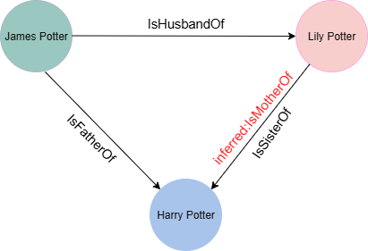
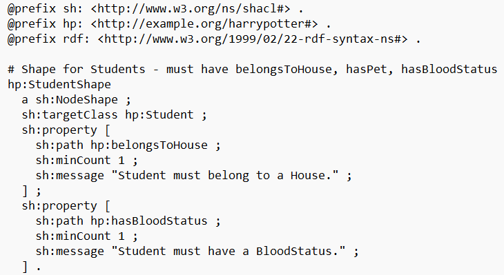

Professorship for Distributed and Self-Organizing Computer Systems,
Chemnitz University of Technology
Chemnitz, Germany
1. Introduction
The web has become more diverse with a growing volume of online content that contains
machine-readable metadata.
The development of promising machine learning technologies can be used to easily extract the data existing
in the internet [1].
This has led to the emergence of the concept of Knowledge Graph(KG). “Knowledge graph is a promising
technique for storing and
communicating real-world knowledge with nodes representing entities and edges representing relationships
between entities” [2]. (Written by A. Uduwana)
Knowledge Graphs can be categorized into open and proprietary types. Open KGs like DBpeida, Wikidata,
Freebase,
YAGO and NELL are publicly accessible and widely used in current research context and Proprietary KGs like
Facebook’s
Entities Graph, Google’s Knowledge Graph and Cyc are developed by companies to enhance their own
applications and services [3]. (Written by A. Uduwana)
The importance of KGs lies in their ability to provide context, connect disparate data sources, and enable
advanced analytical
capabilities [7].As a result, KGs have been widely used in several real-world applications
like personalized recommendation
systems, exploratory search [4],[5],[6] and
domain-specific tasks including healthcare analytics, tourism,
education and
production and manufacturing [8].It is evident from these applications that KGs are
essential for delivering structured and
semantically rich data [9]. (Written by A. Uduwana)
2. Knowledge Graph Quality Control
Despite their usages, KGs give rise to quality concerns which may limit
their performance in practical applications. Regardless of the type or
number of sources used to generate a knowledge graph, the initial data is
often incomplete, contains duplicates, inconsistent, or even error prone
particularly when information is gathered from multiple sources
[9]. As a result, assessing the quality of the generated
KG is a crucial step in quality control [11]. The quality
of KGs is defined as the fitness for purpose and quality assessment helps to
determine for which purpose a KG can be reliably used
[10]. This process of ensuring and improving the quality
of KGs are known as Knowledge Curation (also known as Knowledge Refinement)
[13]. (Written by A. Uduwana)
Six principle dimensions have been introduced to assess the KG quality:
accuracy, consistency, completeness, timeliness, trustworthiness, and
availability [11]. Each of these dimensions is
interrelated and understanding their relationship helps to select the
suitable validation method tailored to different application needs. The
current research defines that ensuring the high-quality KGs involves not
only their initial KG construction, but also the ongoing maintenance and
enhancement as new data and application requirements emerge
[12]. (Written by A. Uduwana)
This study focuses on examining quality indicators such as accuracy,
consistency, completeness, and redundancy. The evaluation methodologies
identified for each indicator were thoroughly tested on a manually created
domain specific knowledge base, to assess their effectiveness and
operational performance. (Written by A. Uduwana)
2.1. Accuracy in Knowledge Graphs
Accuracy in KGs relates to how faithfully the graph's facts or statements
(usually represented as triples: subject, predicate, object) reflect
real-world information [14]. It is the most important
dimension of KG quality. The primary factors that degrade KG accuracy are
incorrect relations, entities, and attributes in the KG. Therefore,
appropriate validation methods must be performed to detect such errors and
enhance the accuracy of the KG [11].
(Written by A. Uduwana)
KG accuracy has often been discussed in other literature. For Example
[15] defines KG accuracy as “the extent to which
knowledge are correct, reliable, and certified free of error”. Some studies
consider the accuracy of knowledge as a synonym for knowledge quality
[16]. (Written by A. Uduwana)
2.2. Consistency in Knowledge Graphs
In recent research [11] “KG consistency is defined as
the degree to which the knowledge of a KG does not contradict itself”.
Consistency focused on logical correctness of KGs rather than the semantic
correctness of triples [7],[17]. Our
KG contains the following triples
[James Potter, IsFatherOf, Harry Potter], [James Potter, IsHusbandOf, Lily
Potter]
, and
[Lily Potter, IsSisterOf, Harry Potter]. Looking at the first two
triples we can conclude that Lily is Harry’s mother. However, the third
triple [Lily Potter, IsSisterOf, Harry Potter] introduces a sibling
relationship, which contradicts the assumed parent-child relationship. This
semantic contradiction makes the knowledge graph logically inconsistent.
(Written by A. Uduwana)

Figure 01: Example of Logical Inconsistency
2.3. Completeness in Knowledge Graphs
Completeness in Knowledge Graphs refers to the extent to which the graph
includes all the necessary entities, properties, and relationships required
to support a specific application or domain. Given the open-world nature of
most KGs and the inherent limitations of data extraction methods, knowledge
graphs are often incomplete, making completeness a critical dimension of
quality assessment.
There are seven recognized types of completeness: (i) Schema completeness,
which concerns whether all required classes and properties are defined in
the schema; (ii) Property completeness, which refers to the presence or
absence of expected property values for entities; (iii) Population
completeness, which measures how many relevant real-world entities are
represented in the graph; (iv) Interlinking completeness, which assesses the
existence of links between datasets using linksets; (v) Currency
completeness, which evaluates whether the data is up to date; (vi) Metadata
completeness, which relates to the availability of contextual and provenance
information; and (vii) Labelling completeness, which concerns the presence
of human-readable labels for entities and properties [25]
. (Written by P.M.P.P.Palihena)
2.4. Redundancy in Knowledge Graphs
The presence of duplicate or semantically equivalent facts, relationships,
or entities is a common challenge in Knowledge Graphs. Such redundancy often
arises from integrating heterogeneous data sources, noisy extraction
processes, or schema mismatches. For instance, in a KG modeling the Harry
Potter universe, the friendship between "Harry Potter" and "Hermione
Granger" might be represented multiple times using different predicates like
isFriendOf and hasFriend, or through bidirectional triples such as (“Harry
Potter”, isFriendOf, “Hermione Granger”) and (“Hermione Granger”,
isFriendOf, “Harry Potter”). While some redundancy can contribute to fault
tolerance, excessive duplication can inflate the graph’s size, complicate
reasoning and querying, and introduce inconsistencies
[26], [27]. Effectively managing this issue involves techniques
such as duplicate detection, schema alignment, and entity resolution to
identify and consolidate overlapping information, thereby improving the
graph’s efficiency, accuracy, and maintainability [28].
(Written by P.M.P.P.Palihena)
2.5. Building and Validating a Domain-Specific KG: A Harry Potter Case Study
Generally, accuracy and consistency in KGs can be detected through several
validation methods. To demonstrate practical application of those
techniques, we constructed simple yet high quality KG based on the Harry
Potter universe. The graph structure and entity relationships were initially
conceptualized by referring the most common facts about this universe. The
formal ontology creation, modeling of the KG, and validation were performed
using the Protégé, a free and user-friendly ontology editor for KGs. This
method ensures that our KG adheres to semantic web standards and supports
various validation methods that we apply to assess different quality metrics
of KGs. (Written by A. Uduwana)
Figure 02: KG Creation Workflow
3. State-of-the-Art Methods for KG Validation
Generally, accuracy, consistency, completeness and redundency of KGs can be
evaluated using several validation methods. (Written by A. Uduwana)
3.1. Manual Ground Truth Validation
Researchers rely on human experts to manually verify the correctness of each
triples within a KG. This is the most reliable way to find the truthfulness
of facts in the KG. However, modern KGs can contain millions or even
billions of triples, making manually checking each triple is impractical and
expensive in the terms of time and resources [14].
(Written by A. Uduwana)
To address this challenge the researchers manually annotate only a small and
randomly selected sample triples. This subset is used to measure the overall
accuracy of the entire KG. If the sample size is too small, the resulting
accuracy may not reflect the true accuracy of the entire KG, leading to
potential errors. A sufficiently enough sample size is required to obtain a
statistically relevant estimate, though this increases both the cost and
time required for manual annotation [14].
(Written by A. Uduwana)
Manual validation is also employed to assess completeness and redundancy in
knowledge graphs. Experts examine sampled triples to determine whether key
entities, relationships, and attributes are adequately represented, helping
to identify missing information. While effective, this process is
resource-intensive and does not scale well [25].
Regarding redundancy, manual inspection aids in detecting duplicate or
semantically equivalent triples, such as different expressions of the same
relationship between “Harry Potter” and “Hermione Granger.” Although manual
review can uncover subtle redundancies that automated methods may miss, it
is typically feasible only for small samples in large KGs
[29]. Therefore, manual validation of completeness and
redundancy is usually combined with automated techniques to ensure a more
thorough and scalable quality assessment.
(Written by P.M.P.P.Palihena)
3.2. Crowdsourcing
Crowdsourcing is a promising method for building and verifying a
high-quality knowledge graph from the knowledge of many casual users not
just experts. Two primary tasks in this method are knowledge collection and
verification. Collection involves gathering facts from a large number of
users through fill in the blank quizzes while verification ensures the
correctness of those facts through true or false quizzes. This approach not
only engages users but also ensures that both collection and verification
are carried out efficiently [1].(Written by A. Uduwana)
Such manual validation methods are time consuming and expensive therefore
only a small, randomly samples subset of triples is typically checked by
experts. Crowdsourcing allows for the validation of a much larger set of
facts by distributing the work among many users and helps maintain the
accuracy and consistency of the KG while reducing the burden on individual
curators [1],[18],[19].(Written by A. Uduwana)
3.3. Human in the Loop (HITL) Validation
Human-in-the-loop (HITL) validation refers to the process of involving human
experts in the KG validation process alongside automated validation methods
such as those based on Large Language Models (LLMs) [23].
With large KGs, fully automated techniques may overlook subtle errors and
require domain-specific expertise, especially when dealing with
context-specific or ambiguous scenarios [24].
(Written by A. Uduwana)
For instance, our KG contains two distinct nodes representing the characters
Tom Riddle and Lord Voldemort. Due to shared facts such as wand
core, school, house, mother, and language ability, automated tools may flag
these nodes as potential duplicates. However, based on domain knowledge,
experts can confirm that these two nodes actually refer to the same
individual. In such cases HITL validation becomes essential for resolving
ambiguities that automated methods alone cannot address.
(Written by A. Uduwana)
3.4. Rule Based Validation using SPARQL
Rule-based validation is essential for maintaining the accuracy and
consistency of KGs. SPARQL, the standardized query language for RDF(Resource
Description Framework) recommended by the W3C, is widely used for this
purpose [2]. Ontology management tools like Protégé
supports the modeling and storage of KGs in formats like RDF or TTL (Terse
RDF Triple Language (Turtle)) [20]. Competency questions,
which define the requirements for the KG are first formulated in natural
language and then translated into SPARQL queries. Once queries are formed,
we can use them to execute against the KG to validate it’s structure and
content. For instance, a properly constructed SPARQL query can check if all
instances of a class have required properties, or if there are any logical
contradictions
[7]. (Written by A. Uduwana)
A SPARQL constraint was implemented to ensure that no character could be
both academic staff and a student simultaneously. The query was implemented
within the Protégé SPARQL editor as follows;
(Written by A. Uduwana)
Query 01: Select every character that has been
incorrectly assigned to both the academic staff (hp:AcademicStaff) and
student (hp:Student) roles at the same time.
Another SPARQL constraint was used to validate that each character is
assigned one blood status at a time.
(Written by A. Uduwana)
Query 02: The query groups characters by their identifier
and counts how many blood statuses (hp:hasBloodStatus) are assigned to
each one. It returns only characters who have been assigned more than one
blood status are returned.
In addition to consistency constraints, a comprehensive set of SPARQL
queries was designed to validate the completeness and redundancy of the
Harry Potter KG. Specifically, these queries were aligned with the seven
established dimensions of completeness: schema, property, population,
interlinking, currency, metadata, and labeling completeness
[25]. Each dimension was operationalized through
domain-specific competency questions, formulated in natural language and
subsequently translated into executable SPARQL constraints. This enabled
targeted validation of both structural and semantic gaps in the KG.
(Written by P.M.P.P.Palihena)
For example, property completeness was assessed by identifying hp:Student
individuals lacking values for both hp:hasHouse and hp:hasBloodStatus, which
are essential attributes in the Harry Potter domain. Interlinking
completeness was evaluated by selecting instances that were only linked to
their type but lacked meaningful relationships, revealing isolated or
underconnected nodes. Currency completeness was checked by querying for
individuals missing temporal annotations, such as creation or update
timestamps. (Written by P.M.P.P.Palihena)
Moreover, SPARQL queries were employed to detect redundancies, including
semantically equivalent or duplicate triples—such as repeated assertions of
the same relationship (e.g., multiple identical hp:hasFriend links between
the same pair of characters). This process helped identify unnecessary
repetition, which can inflate graph size and introduce inference errors.
(Written by P.M.P.P.Palihena)
To further strengthen the validation process, OWL reasoners were employed
alongside SPARQL queries to uncover semantic-level issues related to
completeness and redundancy. These tools infer implicit facts based on
ontology axioms, class hierarchies, and property constraints. For example,
if every hp:Student is expected to have a hp:hasBloodStatus property, the
absence of this property becomes evident during reasoning. Similarly,
redundancies such as duplicate assertions—such as symmetric relationships
explicitly stated in both directions—can be detected. By integrating
SPARQL-based rule checks with OWL reasoning, we were able to identify both
surface-level and structural-level validation issues, thereby enhancing the
overall quality assurance of the knowledge graph [31], [32]. (Written by P.M.P.P.Palihena)
3.5. Schema Based Validation using SHACL
Shapes Constraint Language (SHACL) is a W3C-recommendation for defining
constraints over RDF data [3]. Quality metrics such as
accuracy and consistency can be ensured by using SHACL as a validation
language. SHACL enables schema like structures known as shapes to validate a
KG [22]. Through the application of these shapes, large
volumes of data can be filtered and validated, thereby enhancing the overall
quality of the KG [21]. (Written by A. Uduwana)
The SHACL Core Vocabulary distinguishes between two main types of shapes as
node shapes and property shapes
[22],[24]. Node shapes are applied to
a set of nodes within an RDF data graph, referred to as focus nodes.
Property shapes, on the other hand, validate the values of particular
properties associated with these focus nodes [24]. Target
specifications are used to define which nodes in the RDF graph are selected
[3],[22].(Written by A. Uduwana)
To demonstrate SHACL validation we created several SHACL shapes to ensure
accuracy and consistency of our KG based on Harry Potter Universe.
(Written by A. Uduwana)
SHACL Shape 01 : Character must belong to one of the
known houses
This validation rule applies to all instances of the hp:Character class in
ourKG. It checks the property hp:belongsToHouse for each character to ensure
that its value is one of the four houses listed in the SHACL shape. If this
condition is not met, the validation process will report an error with the
specified message in the validation report. (Written by A. Uduwana)
SHACL Shape 02 : Hermione Granger must belong to the
house of Gryffindor
This SHACL shape targets the node of Hermione Granger (hp:HermioneGranger)
and checks the property hp:belongsToHouse for Hermione Granger has the value
hp:Gryffindor. If this condition is not met, the validation process will
report an error with the specified message in the validation report.
(Written by A. Uduwana)
Building upon the foundational SHACL constraints established for structural
validation, additional shapes were devised to manage completeness and
redundancy checks, thereby extending the scope of validation to capture more
nuanced quality dimensions within the knowledge graph. These validations
were guided by domain expectations and common modeling constraints in the
Harry Potter universe. The following shapes were defined and evaluated using
the SHACL Validation Playground.
(Written by P.M.P.P.Palihena)

SHACL Shape 03 : Completeness - Students must have both a
house and blood status
This shape targets all individuals of type hp:Student and ensures they have
the properties hp:belongsToHouse and hp:hasBloodStatus, each with a
sh:minCount 1 constraint. These properties are essential for maintaining the
completeness. Nodes that violate these constraints are flagged in the
validation report, which identifies both the specific node and the
corresponding violated constraint.
(Written by P.M.P.P.Palihena)
SHACL Shape 04 : Redundancy Constraints on Head of House
Assignments
To minimize redundancy within the knowledge graph, two SHACL shapes were
employed. The first constraint enforces a sh:maxCount 1 restriction on the
hp:isHeadOfHouse property for individuals, thereby ensuring that no single
entity is assigned as head of more than one house. The second constraint
utilizes an inverse path (sh:inversePath hp:isHeadOfHouse) to enforce that
each instance of hp:House is associated with at most one head, thereby
preserving the uniqueness of headship assignments per house. Violations of
these constraints are explicitly captured in the SHACL validation report,
identifying both the offending nodes and the specific rules they breach.
(Written by P.M.P.P.Palihena)
4. Challenges in Knowledge Graph Evaluation and Validation
The widespread adoption of KGs across diverse application domains has
amplified the importance of robust evaluation and validation methodologies.
However, this task remains inherently complex due to the multifaceted nature
of KGs, their integration of heterogeneous data sources, and the absence of
standardized validation frameworks [29],[33].
The key challenges can be categorized as follows:(Written by P.M.P.P.Palihena)
4.1 Absence of Ground Truth
A foundational obstacle in KG
validation is the lack of definitive ground truth or gold standard datasets.
Unlike traditional relational databases with well-defined schemas and
controlled inputs, KGs often draw from noisy, incomplete, or unstructured
sources. This heterogeneity makes it difficult to establish objective
baselines for evaluating dimensions such as accuracy or completeness
[29]. (Written by P.M.P.P.Palihena)
4.2 Context-Dependent Quality Dimensions
Another significant
challenge is the contextual nature of quality metrics. Concepts like
relevance, completeness, and trustworthiness cannot be universally defined
but must be interpreted based on the domain and use case. For example,
completeness in a biomedical KG may emphasize the coverage of
protein–protein interactions, while in a cultural heritage KG, it may
pertain to temporal or geographical span [33],[34].
This variability necessitates domain-specific validation strategies
and hinders the development of general-purpose validation pipelines. (Written by P.M.P.P.Palihena)
4.3 Semantic Inconsistency and Integration Complexity
Semantic
heterogeneity becomes especially problematic when integrating data from
multiple sources. Disparate vocabularies, inconsistent class hierarchies,
and misaligned property semantics can lead to semantic drift, where the
intended meaning of data is altered or obscured. While technologies such as
OWL reasoners and SHACL constraints can detect certain inconsistencies,
resolving them typically requires manual curation and expert oversight
[34]. (Written by P.M.P.P.Palihena)
4.4 Scalability of Validation Techniques
The scalability of
validation tools and methodologies represents a critical bottleneck. As KGs
scale to encompass millions or even billions of triples, executing complex
validation rules, particularly those involving logical reasoning or
pattern based SPARQL constraints becomes computationally expensive. Most
current tools are not optimized for efficient large scale validation, often
requiring compromises between completeness of checks and system performance
[29]. (Written by P.M.P.P.Palihena)
4.5 Temporal Dynamics and Continuous Validation
Dynamic and evolving nature of real-world knowledge introduces challenges
for maintaining up-to-date and consistent KGs. As new data is ingested then the
previously validated assertions may become obsolete or conflicting. Ensuring
continuous validation requires the development of incremental validation
mechanisms that can detect and resolve issues in response to changes over
time. Despite recent advances, this remains an open and active area of
research [33], [34]. (Written by P.M.P.P.Palihena)
5. Issues in Maintaining High-Quality Knowledge Graphs
Maintaining the quality of KGs post deployment is a complex task, influenced
by evolving data sources, schema modifications, and operational constraints.
One of the most pressing issues is data decay, where factual accuracy
deteriorates over time due to real-world changes. In the absence of robust
mechanisms to update or annotate temporal metadata, outdated information may
remain undetected within the KG. That leads to misleading inferences and
potentially incorrect conclusions [29], [33]. Another persistent problem is redundancy,
particularly in collaborative or semi-automated KG construction pipelines.
Duplicate triples, semantically equivalent relationships, and overlapping
entities can accumulate, which may cause degradation of reasoning
performance [29], [33].
Entity resolution and identity management remain
challenging when integrating new data. Correctly merging or differentiating
entities based on context is complex, and errors can lead to fragmented
knowledge and reduced semantic consistency [34]. Ontology
drift is another issue, referring to unexpected changes in schema
definitions that can cause mismatches between older and newer data, leading
to problems with compatibility and reasoning [33].
Governance and workflow challenges further exacerbate quality risks in
knowledge graphs. In decentralized or crowdsourced environments, the lack of
standardized validation protocols, contribution guidelines, and clearly
defined curator roles often leads to inconsistency, incompleteness, and bias
[29], [33]. Together, these issues underscore the need for
ongoing, domain-aware quality monitoring, automated validation pipelines,
and human-in-the-loop mechanisms to sustain KG reliability and utility over
time. (Written by P.M.P.P.Palihena)
6. Conclusion
Ensuring the quality of Knowledge Graphs is an ongoing challenge shaped by
data heterogeneity, evolving schemas, and the absence of universal
validation standards. This study demonstrated that combining automated
techniques such as SHACL constraints, OWL reasoning, and SPARQL-based
rules, with expert review enables effective detection of issues like
incompleteness, redundancy, and semantic inconsistency. However, sustaining
KG integrity requires continuous, domain-specific validation and robust
governance to address operational challenges including data decay, entity
resolution, and ontology drift. Advancing scalable, adaptive validation
frameworks and integrating user feedback will be crucial for building
reliable, high-impact Knowledge Graphs across diverse domains.
[29], [33], [34].
(Written by P.M.P.P.Palihena)
6. Bibliography
[1] H. Bu and K. Kuwabara, “Toward Crowdsourced Knowledge Graph
Construction: Interleaving Collection and Verification of Triples,”in
International Conference on Agents and Artificial Intelligence,Science and
Technology Publications, Lda, 2022, pp. 375–382. doi:
10.5220/0010902700003116.
[2] A. Hogan et al., “Knowledge Graphs,” Sep. 2021, doi: 10.1145/3447772.
[3] D. Fensel et al., “Knowledge Graphs Methodology, Tools and Selected Use
Cases.”
[7] B. Xue and L. Zou, “Knowledge Graph Quality Management: A Comprehensive
Survey,” IEEE Trans Knowl Data Eng, vol. 35, no. 5, pp. 4969–4988, May 2023,
doi: 10.1109/TKDE.2022.3150080.
[8] S. Tsaneva, D. Dessì, F. Osborne, and M. Sabou, “Knowledge graph
validation by integrating LLMs and human-in-the-loop,” 2025, doi:
10.5281/zenodo.13730203.
[9] J. E. L. Gayo, A. Dimou, K. Thornton, and A. Rula, “Editorial of
knowledge graphs validation and quality,” Sep. 26, 2022, IOS Press BV. doi:
10.3233/SW-223261.
[10] L. Greif, S. Hauck, A. Kimmig, and J. Ovtcharova, “A Knowledge Graph
Framework to Support Life Cycle Assessment for Sustainable Decision-Making,”
Applied Sciences (Switzerland), vol. 15, no. 1, Jan. 2025, doi:
10.3390/app15010175.
[11] X. Wang et al., “Knowledge graph quality control: A survey,” Sep. 01,
2021, KeAi Communications Co. doi: 10.1016/j.fmre.2021.09.003.
[12] Y. Lin, Z. Liu, M. Sun, Y. Liu, and X. Zhu, “Learning Entity and
Relation Embeddings for Knowledge Graph Completion.” [Online]. Available:
www.aaai.org
[13] E. Huaman, E. Kärle, and D. Fensel, “Knowledge Graph Validation,” May
2020, [Online]. Available: http://arxiv.org/abs/2005.01389
[14] J. Gao, X. Li, Y. E. Xu, B. Sisman, X. L. Dong, and J. Yang, “Efficient
knowledge graph accuracy evaluation,” in Proceedings of the VLDB Endowment,
VLDB Endowment, 2018, pp. 1679–1691. doi: 10.14778/3342263.3342642.
[15] R.Y. Wang, D.M. Strong, Beyond accuracy: what data quality means to
data consumers, J. Manag. Inf. Syst. 12 (4) (1996) 5–33.
[16] F. Naumann, in: Quality-Driven Query Answering for Integrated
Information Systems, 2261, Springer, 2003.
[17] A. Zaveri, A. Rula, A. Maurino, R. Pietrobon, J. Lehmann, and S. Auer,
“Quality assessment for Linked Data: A Survey,” in Semantic Web, IOS Press,
2016, pp. 63–93. doi: 10.3233/SW-150175.
[18] A. Revenko, A. Ahmeti, M. Schauer, and M. Sabou, “Crowd-sourced
knowledge graph extension: a belief revision based approach.” [Online].
Available: www.w3.org/OWL
[19] A. Oelen, M. Stocker, and S. Auer, “Creating and validating a scholarly
knowledge graph using natural language processing and microtask
crowdsourcing,” International Journal on Digital Libraries, vol. 25, no. 2,
pp. 273–285, Jun. 2024, doi: 10.1007/s00799-023-00360-7.
[20] L. Greif, S. Hauck, A. Kimmig, and J. Ovtcharova, “A Knowledge Graph
Framework to Support Life Cycle Assessment for Sustainable Decision-Making,”
Applied Sciences (Switzerland), vol. 15, no. 1, Jan. 2025, doi:
10.3390/app15010175.
[21] Diplom-Ingenieurin, “Extraktionv on SHACLShapesfür Evolving
KnowledgeGraphs DIPLOMARBEIT zur Erlangung des akademischen Grades.” doi:
10.34726/hss.2025.120502.
[22] H. Knublauch and D. Kontokostas, “Shapes Constraint Language (SHACL),”
W3C Recommendation, 20 July 2017. World Wide Web Consortium. [Online].
Available:
https://www.w3.org/TR/2017/REC-shacl-20170720/
[Accessed: Jun. 30, 2025].
[23] S. Tsaneva, D. Dessì, F. Osborne, and M. Sabou, “Knowledge graph
validation by integrating LLMs and human-in-the-loop,” 2025, doi:
10.5281/zenodo.13730203.
[24] B. Zhang, A. M. Peñuela, and E. Simperl, “Towards Explainable Automatic
Knowledge Graph Construction with Human-in-the- Loop,” in Frontiers in
Artificial Intelligence and Applications, IOS Press BV, Jun. 2023, pp.
274–289. doi: 10.3233/FAIA230091.
[25] S. Issa, O. Adekunle, F. Hamdi, S. S. S. Cherfi, M. Dumontier, and A.
Zaveri, “Knowledge Graph Completeness: A Systematic Literature Review,”
2021, Institute of Electrical and Electronics Engineers Inc. doi:
10.1109/ACCESS.2021.3056622.
[26] Hur, A., Janjua, N. and Ahmed, M. (2021) ‘A survey on state-of-the-art
techniques for knowledge graphs construction and challenges ahead’, 2021
IEEE Fourth International Conference on Artificial Intelligence and
Knowledge Engineering (AIKE), pp. 99–103. doi:10.1109/aike52691.2021.00021.
[27] Hofer, M. et al. (2024) ‘Construction of knowledge graphs: Current
State and challenges’, Information, 15(8), p. 509. doi:10.3390/info15080509.
[28] Li, W. et al. (2023) ‘Constructing low-redundant and high-accuracy
knowledge graphs for education’, Lecture Notes in Computer Science, pp.
148–160. doi:10.1007/978-3-031-33023-0_13.
[29] Paulheim, H. (2016) ‘Knowledge graph refinement: A survey of approaches
and evaluation methods’, Semantic Web, 8(3), pp. 489–508.
doi:10.3233/sw-160218.
[30] Hoppa, J. (2025) Turn a Harry Potter book into a knowledge graph, Graph
Database & Analytics. Available at:
https://neo4j.com/blog/developer/turn-a-harry-potter-book-into-a-knowledge-graph/
(Accessed: 02 July 2025).
[31] Unlocking the power of Generative AI: Why owl leads in knowledge
representation and semantic layers data.world. Available at:
https://data.world/blog/owl-semantic-layers/ (Accessed: 03 July 2025).
[32] Unlocking the power of Generative AI: Why owl leads in knowledge
representation and semantic layers data.world. Available at:
https://data.world/blog/owl-semantic-layers/ (Accessed: 03 July 2025).
[33] Färber, M., Bartscherer, F., Menne, C., & Rettinger, A. (2018). Linked
Data Quality of DBpedia, Freebase, OpenCyc, Wikidata, and YAGO. Semantic
Web, 9(1), 77–129. https://doi.org/10.3233/SW-170275
[34] Hogan, A., Blomqvist, E., Cochez, M., et al. (2021). Knowledge Graphs.
ACM Computing Surveys, 54(4), 1–37. https://doi.org/10.1145/3447772